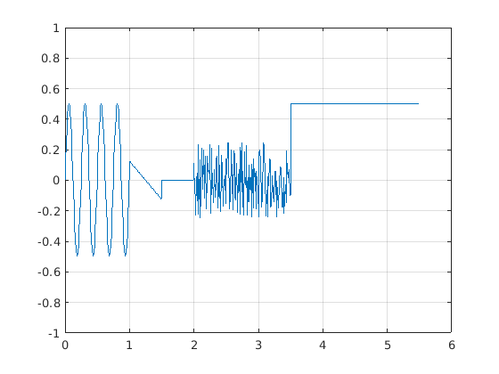

Gabalveida sign?la mont???
Contents
Sinuso?da
t_sin = 0:0.01:1; y_sin = A0+A*sin(2*pi*f*(t-delay)) A0 = 0; A =0.5; T = (2.5-1)/6; f = 1/T; delay = 0; y_sin = A0+A*sin(2*pi*f*(t_sin-delay)); plot(t_sin,y_sin)
Line?ri main?gs sign?ls
t_saw = 1:0.01:1.5; y_saw = k*t(t_saw-delay) yA = 0; yB = 0.5; tA = -1; tB = 0; delay = 0.125; k = (yA-yB)/(tA-tB) %l?knes sl?puma koeficents delay - lai noteiktu delayr ir j?skat?s krustpunkts ar t asi (y=0) y_saw = k*(t_saw-delay); plot(t_saw,y_saw)
Konstantes sign?ls
t_const = 1.5:0.01:2; y_const = zeroes(1,1) 0.5; y_const = ones(1,1)*0.5; nav korekti, ja t_const izmain?s, tad y_const nemain?sies y_const = zeros(size(t_const)); y_const = zeros(size(t_const)); plot(t_const,y_const)
Nulles signals
t_zero = 3.5:0.01:5.5; y_zero = zeros(size(t_zero)) 0.5;
trok??a sign?ls
t_noise = 2:0.01:3.5; y_noise = rand(size(t_noise)) * 0.5 - 0.25; plot(t_noise,y_noise)
Sign?lu apvieno?ana
t = [t_sin,t_saw,t_const,t_noise,t_zero]; y = [y_sin,y_saw,y_const,y_noise,y_zero]; plot(t,y) ylim([-1 1]) grid on
function y = lab3_demo_fun(t)
t = 0:0.01:5.5; %t_zero = 3:0.01:5; t_zerof=(t>=3.5)&(t<=5.5);t_zero = t(t_zerof); %t_sin =0:0.01:1; t_sinf=(t>=0)&(t<1);t_sin=t(t_sinf); %t_noise = 2:0.01:3.5; t_noisef=(t>=2)&(t<=3.5);t_noise=t(t_noisef); %t_const = 1:0.01:3; t_constf=(t>=1.5)&(t<=2);t_const=t(t_constf); %t_saw = 1:0.01:1.5; t_sawf = (t>=1)&(t<=1.5);t_saw=t(t_sawf);
sinusoīda
%y_sin=A0+A*sin(2*pi*f*(t-delay)) A0=0; A=0.5; T = (2.5-1)/6; f = 1/T; delay = 0; y_sin=A0+A*sin(2*pi*f*(t_sin-delay)); %plot(t_sin,y_sin)
Lineāri mainīgs signāls
k = (yA-yB)/(tA-tB) slīpuma koeficients
k = (0 +0.5)/(-1-0);
delay = 1.25;
y_saw = k*(t_saw-delay);
%plot(t_saw,y_saw)
konstantes signāls
y_const = zeros(size(t_const));
%plot(t_const,y_const)
nulles signāls
y_zero = zeros(size(t_zero))+0.5;
%plot(t_zero,y_zero)
trokšņa signāls
y_noise = 0.5*rand(size(t_noise))-0.25;
%plot(t_noise,y_noise)
signālu apvienošana
t = [t_sin,t_saw,t_const,t_noise,t_zero];
y = [y_sin,y_saw,y_const,y_noise,y_zero];
plot(t,y)
ylim([-1 1]);
xlim([0 6]);
grid on
ans =
Columns 1 through 7
0 0.1243 0.2409 0.3423 0.4222 0.4755 0.4990
Columns 8 through 14
0.4911 0.4524 0.3853 0.2939 0.1841 0.0627 -0.0627
Columns 15 through 21
-0.1841 -0.2939 -0.3853 -0.4524 -0.4911 -0.4990 -0.4755
Columns 22 through 28
-0.4222 -0.3423 -0.2409 -0.1243 -0.0000 0.1243 0.2409
Columns 29 through 35
0.3423 0.4222 0.4755 0.4990 0.4911 0.4524 0.3853
Columns 36 through 42
0.2939 0.1841 0.0627 -0.0627 -0.1841 -0.2939 -0.3853
Columns 43 through 49
-0.4524 -0.4911 -0.4990 -0.4755 -0.4222 -0.3423 -0.2409
Columns 50 through 56
-0.1243 -0.0000 0.1243 0.2409 0.3423 0.4222 0.4755
Columns 57 through 63
0.4990 0.4911 0.4524 0.3853 0.2939 0.1841 0.0627
Columns 64 through 70
-0.0627 -0.1841 -0.2939 -0.3853 -0.4524 -0.4911 -0.4990
Columns 71 through 77
-0.4755 -0.4222 -0.3423 -0.2409 -0.1243 -0.0000 0.1243
Columns 78 through 84
0.2409 0.3423 0.4222 0.4755 0.4990 0.4911 0.4524
Columns 85 through 91
0.3853 0.2939 0.1841 0.0627 -0.0627 -0.1841 -0.2939
Columns 92 through 98
-0.3853 -0.4524 -0.4911 -0.4990 -0.4755 -0.4222 -0.3423
Columns 99 through 105
-0.2409 -0.1243 0.1250 0.1200 0.1150 0.1100 0.1050
Columns 106 through 112
0.1000 0.0950 0.0900 0.0850 0.0800 0.0750 0.0700
Columns 113 through 119
0.0650 0.0600 0.0550 0.0500 0.0450 0.0400 0.0350
Columns 120 through 126
0.0300 0.0250 0.0200 0.0150 0.0100 0.0050 0
Columns 127 through 133
-0.0050 -0.0100 -0.0150 -0.0200 -0.0250 -0.0300 -0.0350
Columns 134 through 140
-0.0400 -0.0450 -0.0500 -0.0550 -0.0600 -0.0650 -0.0700
Columns 141 through 147
-0.0750 -0.0800 -0.0850 -0.0900 -0.0950 -0.1000 -0.1050
Columns 148 through 154
-0.1100 -0.1150 -0.1200 -0.1250 0 0 0
Columns 155 through 161
0 0 0 0 0 0 0
Columns 162 through 168
0 0 0 0 0 0 0
Columns 169 through 175
0 0 0 0 0 0 0
Columns 176 through 182
0 0 0 0 0 0 0
Columns 183 through 189
0 0 0 0 0 0 0
Columns 190 through 196
0 0 0 0 0 0 0
Columns 197 through 203
0 0 0 0 0 0 0.1130
Columns 204 through 210
-0.0777 -0.1013 -0.2310 0.0207 -0.1408 0.2353 -0.2263
Columns 211 through 217
0.0078 -0.2483 0.1357 -0.1724 0.2081 -0.0630 -0.0050
Columns 218 through 224
0.1996 -0.1243 0.0472 0.1587 -0.1933 0.0178 0.1603
Columns 225 through 231
0.0708 0.0384 0.0890 0.2332 -0.2227 0.2102 -0.1009
Columns 232 through 238
0.0444 -0.1522 0.0561 0.0682 -0.1154 -0.0229 0.1337
Columns 239 through 245
0.1564 -0.1857 -0.0339 0.2266 -0.0226 -0.2078 0.0616
Columns 246 through 252
0.1607 0.0746 -0.1771 -0.0716 -0.0111 0.0309 -0.1590
Columns 253 through 259
0.1371 0.0348 0.2473 0.2457 0.2195 -0.1930 -0.0374
Columns 260 through 266
-0.1442 0.1954 0.0184 -0.1981 -0.1237 0.1950 -0.1208
Columns 267 through 273
0.1747 -0.1340 0.1107 -0.1732 -0.2136 0.0385 -0.0775
Columns 274 through 280
0.2176 -0.2295 0.1945 -0.0840 0.2432 -0.1245 -0.2324
Columns 281 through 287
0.1846 0.0525 -0.0098 -0.0532 0.2301 -0.2338 -0.0611
Columns 288 through 294
0.1003 -0.1450 0.0168 -0.0700 0.1066 -0.2465 0.0698
Columns 295 through 301
-0.1869 0.1373 0.0187 0.0466 -0.1903 0.0559 -0.0053
Columns 302 through 308
-0.0607 -0.2443 0.1798 0.1956 0.1272 0.1499 -0.1832
Columns 309 through 315
-0.1127 0.2185 0.2478 0.2258 -0.0002 0.0651 -0.2410
Columns 316 through 322
-0.0639 -0.2454 0.0234 -0.0388 0.1395 0.1347 -0.1759
Columns 323 through 329
-0.1748 0.0182 0.0307 -0.0939 -0.1477 0.0596 -0.0180
Columns 330 through 336
0.0577 -0.2469 -0.0079 -0.0780 -0.1886 -0.0100 -0.0317
Columns 337 through 343
0.0890 0.0809 -0.1836 -0.1372 -0.1830 0.0183 -0.2238
Columns 344 through 350
-0.1221 -0.0271 -0.1489 0.1933 0.0364 0.0539 0.0125
Columns 351 through 357
0.0715 -0.1044 -0.0875 0.5000 0.5000 0.5000 0.5000
Columns 358 through 364
0.5000 0.5000 0.5000 0.5000 0.5000 0.5000 0.5000
Columns 365 through 371
0.5000 0.5000 0.5000 0.5000 0.5000 0.5000 0.5000
Columns 372 through 378
0.5000 0.5000 0.5000 0.5000 0.5000 0.5000 0.5000
Columns 379 through 385
0.5000 0.5000 0.5000 0.5000 0.5000 0.5000 0.5000
Columns 386 through 392
0.5000 0.5000 0.5000 0.5000 0.5000 0.5000 0.5000
Columns 393 through 399
0.5000 0.5000 0.5000 0.5000 0.5000 0.5000 0.5000
Columns 400 through 406
0.5000 0.5000 0.5000 0.5000 0.5000 0.5000 0.5000
Columns 407 through 413
0.5000 0.5000 0.5000 0.5000 0.5000 0.5000 0.5000
Columns 414 through 420
0.5000 0.5000 0.5000 0.5000 0.5000 0.5000 0.5000
Columns 421 through 427
0.5000 0.5000 0.5000 0.5000 0.5000 0.5000 0.5000
Columns 428 through 434
0.5000 0.5000 0.5000 0.5000 0.5000 0.5000 0.5000
Columns 435 through 441
0.5000 0.5000 0.5000 0.5000 0.5000 0.5000 0.5000
Columns 442 through 448
0.5000 0.5000 0.5000 0.5000 0.5000 0.5000 0.5000
Columns 449 through 455
0.5000 0.5000 0.5000 0.5000 0.5000 0.5000 0.5000
Columns 456 through 462
0.5000 0.5000 0.5000 0.5000 0.5000 0.5000 0.5000
Columns 463 through 469
0.5000 0.5000 0.5000 0.5000 0.5000 0.5000 0.5000
Columns 470 through 476
0.5000 0.5000 0.5000 0.5000 0.5000 0.5000 0.5000
Columns 477 through 483
0.5000 0.5000 0.5000 0.5000 0.5000 0.5000 0.5000
Columns 484 through 490
0.5000 0.5000 0.5000 0.5000 0.5000 0.5000 0.5000
Columns 491 through 497
0.5000 0.5000 0.5000 0.5000 0.5000 0.5000 0.5000
Columns 498 through 504
0.5000 0.5000 0.5000 0.5000 0.5000 0.5000 0.5000
Columns 505 through 511
0.5000 0.5000 0.5000 0.5000 0.5000 0.5000 0.5000
Columns 512 through 518
0.5000 0.5000 0.5000 0.5000 0.5000 0.5000 0.5000
Columns 519 through 525
0.5000 0.5000 0.5000 0.5000 0.5000 0.5000 0.5000
Columns 526 through 532
0.5000 0.5000 0.5000 0.5000 0.5000 0.5000 0.5000
Columns 533 through 539
0.5000 0.5000 0.5000 0.5000 0.5000 0.5000 0.5000
Columns 540 through 546
0.5000 0.5000 0.5000 0.5000 0.5000 0.5000 0.5000
Columns 547 through 553
0.5000 0.5000 0.5000 0.5000 0.5000 0.5000 0.5000
Column 554
0.5000
 Saja laboratorijas darba es uzinaaju kaa var mainiit signaalus.
Katram signaalam es izmainiju koordinaatus un y un x assim izveidoju limitus. Peec tam ar plot komandu uzzimeeju grafiku.